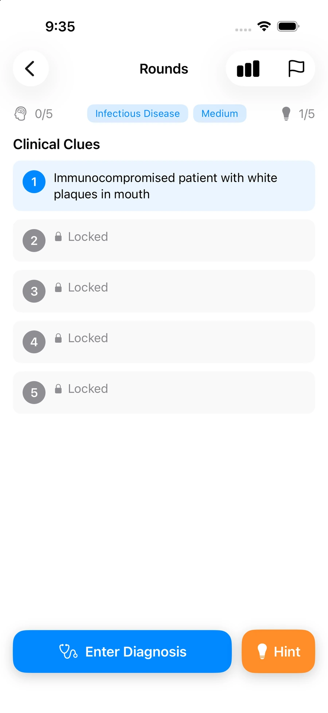
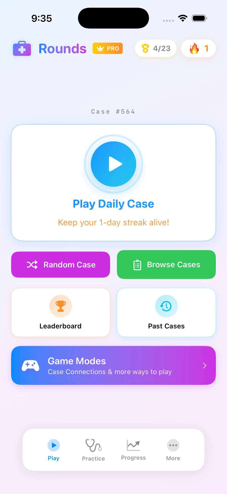
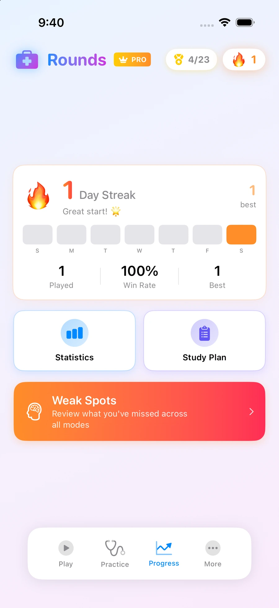

02
Byline Blogs
An automated content pipeline giving small healthcare practices — starting with direct primary care clinics — access to real SEO content without agency costs.
Brask Group builds software and writes analysis for a healthcare system being remade by AI — training, practice, and delivery alike. We start wherever we can see the problem clearest, and build outward from there.
Independent Self-funded No outside capital
Our thesis
AI is coming to medicine regardless of how the field feels about it — training, clinical practice, and how care gets delivered are all already changing. Some clinicians are excited, many are anxious, and both reactions are reasonable: a lot of what’s being built is built by people who’ve never sat with a patient or carried a pager.
We build from the other side of that gap. Not as a general bet on AI, but problem by problem, wherever the failure mode is clear enough to build directly against. Our first was in medical education: students are already heavy users of AI, but most of that use looks the same way — ask a question, get an answer, move on. That’s fast, and it’s exactly the wrong shape for how clinical intuition actually gets built, which happens through iterative, back-and-forth reasoning, wrong turns included. Rounds is our answer to that specific problem. It won’t be the last problem we take on.
That’s the whole approach, and it scales past where we started. Every product and every essay is a brick in the same structure — a specific, growing answer to what AI should look like inside medicine, built by people close enough to the problem to get the details right, wherever in the system that problem happens to be.
What we’ve built — starting point, not the whole map
01
Our starting point was medical education, because that’s the vantage point our founder had. We noticed medical students using AI the same way they’d use a search engine: ask, get an answer, move on. That’s efficient, and it skips the exact back-and-forth reasoning that builds clinical intuition. Rounds is built to put that reasoning process back in — AI-generated case simulations that push students to work through a case the way a real patient encounter demands, not hand them the answer.
Live on the App Store, used daily by students across clinical rotations. Rounds is self-sustaining on its own revenue. It’s our flagship today because it’s what we’ve proven — not because medical education is the limit of what we’re building toward.



02
An automated content pipeline giving small healthcare practices — starting with direct primary care clinics — access to real SEO content without agency costs.
03
A discovery tool for medical training programs, built to simplify an application process that’s more opaque than it needs to be. No AI component — a straightforward data and search problem, solved as one.
04
Originally built to solve inpatient bed management, Sitr’s core logic generalized into event seating — a clean example of how a healthcare-first problem can produce a broader product.
Analysis
Software is half the approach. The other half is written — arguing for what medicine’s relationship with AI should look like, from someone still training inside it. We publish at Side Effects: essays on AI in clinical practice, medical education, and the systems underneath both.
Structure
Structure
Brask Group is a registered LLC. It handles banking, contracts, and payments across every product in the portfolio.
Funding
Rounds funds itself. The rest of the portfolio is funded independently — through consulting work, JANUS (a marketing agency operated prior to Brask Group), and Capital Alpha, an investment portfolio under the same ownership. Brask Group has taken no outside investment.
Built by
Brask Group was founded by Ali Mirza, when he was a 1st year medical student at UConn School of Medicine. Prior to Brask Group and medical school, he founded and operated a marketing agency (JANUS). Prior to his work in marketing he worked at Epic Systems, learning first-hand what the interface of tech and medicine looks like at highest levels today. In undergrad he studied Classics, Biochemistry, Economics, and Game Theory. Today, Ali writes Side Effects and leads Brask Group’s product and editorial work.
Get in touch